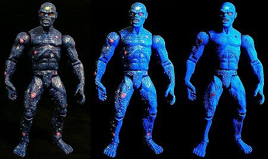

|
I decided to do this custom on a whim. I was flipping through the Who's Who, and saw this character. It brought back a long-since buried memory of the Superman comic I had as a kid with the Galactic Golem storyline. The Golem was a Lex Luthor creation, made out of galactic matter that he was able to bring to life.
Galactic Golem was made from a LTR Newborn Lurtz figure, with a haircut, manicure, and pedicure. It was painted entirely with flourescent (neon) paints for that soothing meteoric glow. I took some photos in regular and black light:

|